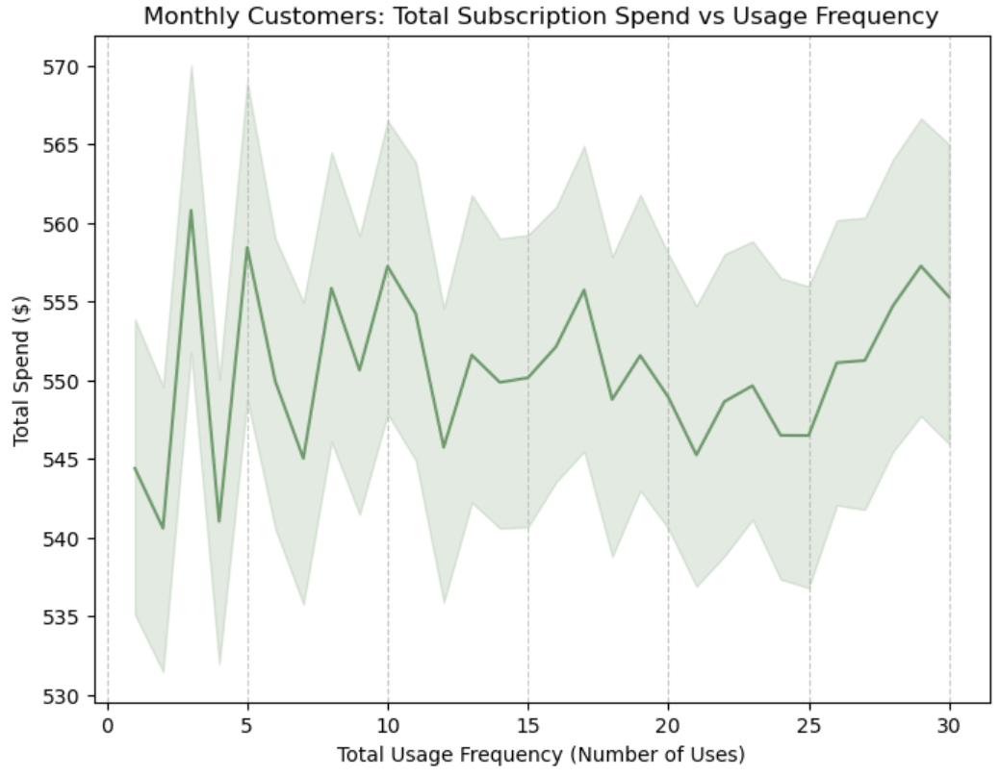

Hi! I'm Alana
Aspiring software engineer with a drive to connect, innovate, and prosper.
Let's Connect!Featured Works

Trend Analysis in Healthcare
An interactive dashboard built through PowerBI that serves as an exploration tool for viewing patient demographics, billing amounts, and more.

Fraud Detection Analysis
An evaluation of how well the Random forest classification model can distinguish between fraudulent transactions through Python.

Subscription Churn Predictions
An extensive data analysis of the machine classification model Gradient Boosting determining the likelihood of whether a user discontinues their subscription through Python.